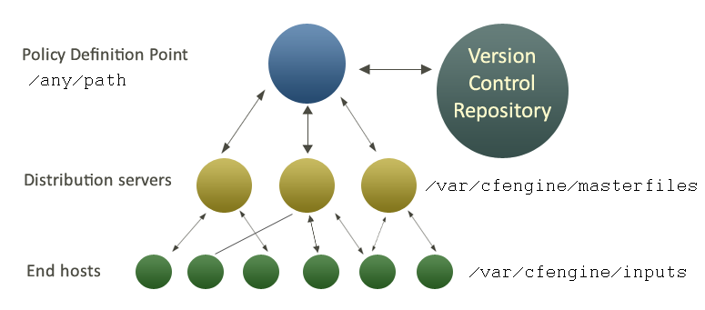

Writing and Serving Policy
- About Policies and Promises
- Policy Workflow
- How Promises Work
- Best Practices
- Layers of Abstraction in Policy
- Promises Available in CFEngine
- Authoring Policy Tools & Workflow
About Policies and Promises
Central to CFEngine's effectiveness in system administration is the concept of a "promise," which defines the intent and expectation of how some part of an overall system should behave.
CFEngine emphasizes the promises a client makes to the overall CFEngine network. Combining promises with patterns to describe where and when promises should apply is what CFEngine is all about.
This document describes in brief what a promise is and what a promise does. There are other resources for finding out additional details about "promises" in the See Also section at the end of this document.
What Are Promises
A promise is the documentation or definition of an intention to act or behave in some manner. They are the rules which CFEngine clients are responsible for implementing.
The Value of a Promise
When you make a promise it is an effort to improve trust, which is an economic time-saver. If you have trust then there is less need to verify, which in turn saves time and money.
When individual components are empowered with clear guidance, independent decision making power, and the trust that they will fulfil their duties, then systems that are complex and scalable, yet still manageable, become possible.
Anatomy of a Promise
bundle agent hello_world
{
reports:
any::
"Hello World!"
comment => "This is a simple promise saying hello to the world.";
}
How Promises Work
Everything in CFEngine can be thought of as a promise to be kept by different resources in the system. In a system that delivers a web site using Apache, an important promise may be to make sure that the httpd or apache package is installed, running, and accessible on port 80.
Summary for Writing, Deploying and Using Promises
Writing, deploying, and using CFEngine promises will generally follow these simple steps:
- Using a text editor, create a new file (e.g.
hello_world.cf). - Create a bundle and promise in the file (see "Hello World" Policy Example).
- Save the file on the policy server somewhere under
/var/cfengine/masterfiles(can be under a sub-directory). - Let CFEngine know about the
promiseon thepolicy server, generally in the file/var/cfengine/masterfiles/promises.cf, or a file elsewhere but referred to inpromises.cf.
* Optional: it is also possible to call a bundle manually, using `cf-agent`.
- Verify the
policy filewas deployed and successfully run.
See Tutorial for Running Examples for a more detailed step by step tutorial.
Policy Workflow
CFEngine does not make absolute choices for you, like other tools. Almost everything about its behavior is a matter of policy and can be changed.
In order to keep operations as simple as possible, CFEngine maintains a private
working directory on each machine, referred to in documentation as WORKDIR and
in policy by the variable sys.workdir By default, this is located at
/var/cfengine or C:\var\CFEngine. It contains everything CFEngine needs to
run.
The figure below shows how decisions flow through the parts of a system.

It makes sense to have a single point of coordination. Decisions are therefore usually made in a single location (the Policy Definition Point). The history of decisions and changes can be tracked by a version control system of your choice (e.g. Git, Subversion, CVS etc.).
Decisions are made by editing CFEngine's policy file
promises.cf(or one of its included sub-files). This process is carried out off-line.Once decisions have been formalized and coded, this new policy is copied to a decision distribution point,
sys.masterdirwhich defaults to/var/cfengine/masterfileson all policy distribution servers.Every client machine contacts the policy server and downloads these updates. The policy server can be replicated if the number of clients is very large, but we shall assume here that there is only one policy server.
Once a client machine has a copy of the policy, it extracts only those promise proposals that are relevant to it, and implements any changes without human assistance. This is how CFEngine manages change.
CFEngine tries to minimize dependencies by decoupling processes. By following this pull-based architecture, CFEngine will tolerate network outages and will recover from deployment errors easily. By placing the burden of responsibility for decision at the top, and for implementation at the bottom, we avoid needless fragility and keep two independent quality assurance processes apart.
Best Practices
Policy Style Guide This covers punctuation, whitespace, and other styles to remember when writing policy.
Bundles Best Practices Refer to this page as you decide when to make a bundle and when to use classes and/or variables in them.
Testing Policies This page describes how to locally test CFEngine and play with configuration files.